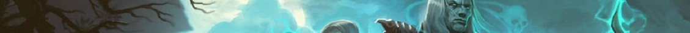

디아블로3 가이드
| 기초정보 | 인터페이스 | 단축키 | 퀘스트 |
|---|---|---|---|
| 제작 | 대장장이 | 보석공 | 점술가 |
| 기타 | 직업선택 | 지도 | |
길치인 사람도 길을 잘 찾아갈 수 있도록 네비게이션이란 시스템이 등장하여
생활에 도움을 많이주며 온라인 게임에서도 이와 같은 시스템들이 등장하여
퀘스트나 이동을 좀 더 편리하게 도와 줍니다.
디아블로3에서도 네비게이션과 같은 시스템들이 존재하며
이러한 기능을 담당하는 것이 웨이 포인트와 지도입니다.
▲ 지도에는 붉은 원처럼 웨이 포인트가 표시된다

▲ 게임 내 웨이 포인트의 모습

▲ 활성화 시키면 파란색으로 퀘스트 지역을 알려준다.
디아블로3의 지도는 월드맵과 미니맵으로 구성되어 있습니다.
월드맵은 다른 MMORPG와는 조금 다르게 되어 있으며, WOW의 지도 방식과 비슷합니다.
일부 온라인 MMORPG의 경우 지도를 열었을 때 모든 지역이 보이는 반면
디아블로3의 월드맵은 자신이 갔던 곳만 밝혀지고 아닌 지역은 검게 나타나며
WOW의 지도을 생각하면 되고 단축키 M 또는 TAB을 누르면 열립니다.
월드맵에는 밝혀진 지역의 NPC 및 창고, 웨이포인트와 같은 요소들을 표시해 주고
근처에 퀘스트 관련된 지역이나 물체가 있으면 노란색 원이 반복적으로 나타납니다.
▲ 여러가지 정보를 알려주며 마우스 우 클릭시 월드맵이 나타난다.
▲ 여러가지 정보를 알려주며 마우스 우 클릭시 월드맵이 나타난다.
TOP